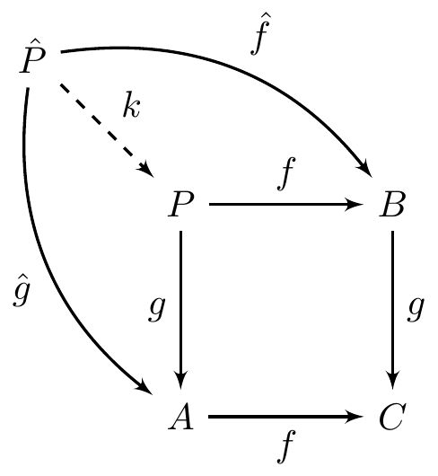

The engine inserts the code into a latex-string-template, which is then processed by LaTeX (and the magick package if fig.ext is not pdf).
You can pass some options to the engine by defining engine.opts, e.g. use your own template instead of the default one to include the tikz code: engine.opts = list(template = "mytemplate.tex"). The default template can be found under system.file('misc', 'tikz2pdf.tex', package = 'knitr').
An example of the tikz-engine from https://raw.github.com/sdiehl/cats/master/misc/example.md
\usetikzlibrary{arrows}
\begin{tikzpicture}[node distance=2cm, auto,>=latex', thick, scale = 0.5]
\node (P) {$P$};
\node (B) [right of=P] {$B$};
\node (A) [below of=P] {$A$};
\node (C) [below of=B] {$C$};
\node (P1) [node distance=1.4cm, left of=P, above of=P] {$\hat{P}$};
\draw[->] (P) to node {$f$} (B);
\draw[->] (P) to node [swap] {$g$} (A);
\draw[->] (A) to node [swap] {$f$} (C);
\draw[->] (B) to node {$g$} (C);
\draw[->, bend right] (P1) to node [swap] {$\hat{g}$} (A);
\draw[->, bend left] (P1) to node {$\hat{f}$} (B);
\draw[->, dashed] (P1) to node {$k$} (P);
\end{tikzpicture}

To develop the tikz-code, you could use qtikz or ktikz.